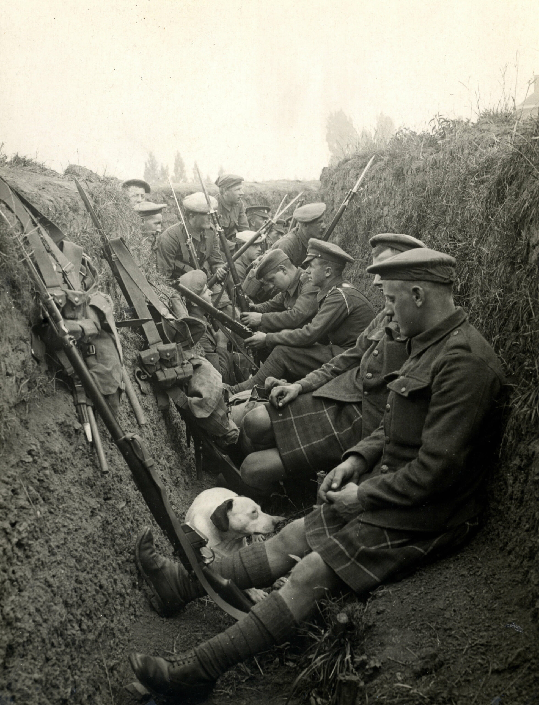

Em meados do século XIX, a Europa atravessava a segunda fase da Revolução Industrial, quando outros países passavam pelo processo de industrialização. As unificações alemã e italiana, ocorridas no mesmo período, acirraram a concorrência dessas potências para expandir o domínio econômico em outras regiões, como a Ásia e a África. Essas unificações se deram por meio de guerras entre as nações europeias. O neoimperialismo foi o domínio europeu sobre o continente asiático e africano. Além das questões econômicas, a cultura foi outro fator importante para o domínio europeu nesses continentes. A Europa representava o desenvolvimento e o progresso, enquanto a África e a Ásia era consideradas “inferiores” e necessitavam desse domínio externo para aderir à civilização. O lucro obtido nessa exploração possibilitou às potências europeias grande investimento na produção de armas de guerra, tendo em vista que o neoimperialismo acirrou as disputas entre elas. Outra área que recebeu investimentos foi a cultura, por isso o período anterior à Primeira Guerra Mundial é denominado Belle Époque, ou seja, “bela época”, quando a Europa era a maior referência na produção cultural. Com o êxito econômico e o surgimento de outros países, como Alemanha e Itália, os nacionalismos ganharam força na Europa. Por conta disso, cada nação se via como soberana, enquanto as demais eram ameaças ao seu desenvolvimento. O estopim da Primeira Guerra Mundial aconteceu em 28 de junho de 1914, quando o arquiduque do Império Austro-Húngaro, Francisco Ferdinando, e sua esposa, Sophie, foram assassinados enquanto desfilavam pelas ruas da cidade de Sarajevo, na Bósnia. Naquela época, o território era dominado pelos austríacos e vários grupos clandestinos surgiram para lutar em favor da independência. Um desses grupos era o “Mão Negra”, do qual Gravilo Princip, autor dos disparos que mataram Ferdinando e Sophie, fazia parte. Esse grupo tinha ligação com a Sérvia. Logo após o atentado, o Império Austro-Húngaro declarou guerra à Sérvia, e o que era para ser uma guerra punitiva se tornou uma guerra mundial. A Alemanha, aliada dos austríacos, ofereceu apoiou militar. Por sua vez, a Sérvia era aliada da Rússia e da França, que ficaram do lado dos sérvios.
A Guerra de Movimento foi a primeira fase da guerra e aconteceu em 1914. Os alemães conquistaram territórios franceses logo após a invasão da Bélgica. Enquanto o inimigo marchava para Paris, o governo francês transferiu a capital para Bordeaux. Porém, a França conseguiu bloquear o avanço da Alemanha em setembro daquele ano. Nesse período, ocorreu a “trégua de Natal”. Na região de Ypres, os soldados que estavam nas trincheiras cessaram os conflitos em dezembro de 1914, por ocasião da véspera de Natal. Os soldados aproveitaram essa trégua para confraternizar entre si e com os inimigos que estavam do outro lado da trincheira. Além do clima festivo, houve troca de alimentos e cigarros. Porém, acabado o clima festivo, as tropas voltaram à guerra. Para saber mais, leia: Trégua de Natal na Primeira Guerra Mundial.
A segunda fase e a mais duradoura da Primeira Guerra Mundial ocorreu entre 1914 e 1918. Foi o período em que os países adotaram estratégias militares baseadas no avanço territorial e na ampliação das trincheiras, que eram valas abertas no solo onde os soldados se abrigavam e atacavam os inimigos. Foi nesse período que a Rússia saiu da guerra, por conta da Revolução Bolchevique, e os Estados Unidos entraram, logo após ataque alemão.
Já próximo ao final da guerra, começou a ofensiva de 1918. Nessa última fase, os países utilizaram novos armamentos, como o tanque e os aviões de caça para bombardeios, além do aumento do efetivo por conta da entrada dos norte-americanos no front. A Alemanha não tinha mais forças para reagir aos ataques da Tríplice Entente e, no final do ano, se rendeu.
Com a rendição alemã e o encerramento da Primeira Guerra Mundial, em 1918, começava-se a discutir os desdobramentos do acordo de paz. O presidente norte-americano Woodrow Wilson sugeriu “14 pontos de paz” no intuito de evitar um novo conflito mundial. A partir dessa proposta, surgiu a Liga das Nações, uma entidade internacional que pretendia mediar disputas entre países de forma diplomática. Em 1919, foi assinado o Tratado de Versalhes, que considerou a Alemanha a grande culpada da guerra e alvo das maiores sanções e de pagamentos de indenizações aos países vencedores. Os alemães saíram do primeiro conflito mundial humilhados, o que abriu espaço para o surgimento de líderes radicais como Adolf Hitler, que usou o ressentimento como motivo para se vingar do resultado daquele tratado.